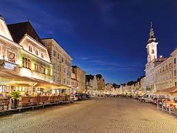
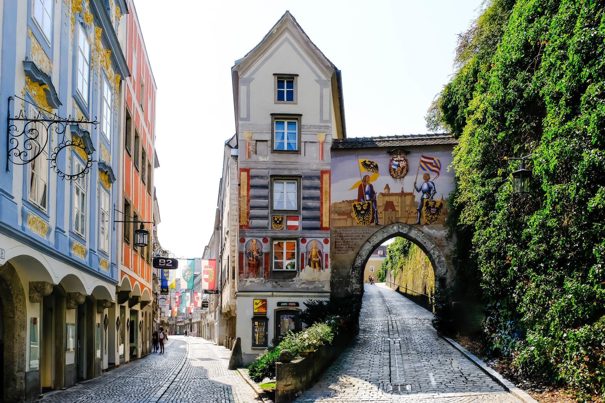
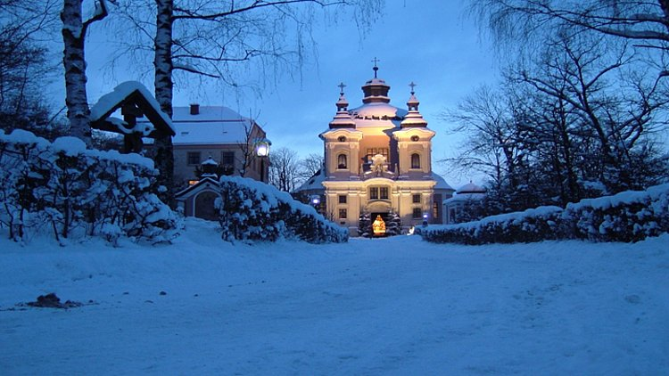

Steyr am Nationalpark - natürlich romantisch!
Steyr am Nationalpark, Stadt der Flüsse, Industrie, Kultur und Architektur ist eine Erlebnis- und Genussstadt für Genießer. Mit 1000-jähriger Geschichte liegt Steyr inmitten der Oberösterreichischen Eisenwurzen. Die historische Altstadt mit dem Stadtplatz zählt zu den am besten erhaltenen Altstadtensembles im deutschsprachigen Raum.



In Steyr ist immer was los - entscheiden Sie sich für eine dieser Aktivitäten:
- Eine Nachtwächter-Tour in das mittelalterliche Steyr: Begleiten Sie den Steyrer Nachtwächter auf eine Zeitreise in die Vergangenheit und besuchen Sie den Stadtpfarrturm.
- Steyrer Augenblicke: Der Rundgang durch die Altstadt bietet einzigartige Einblicke in Steyr. Entdecken Sie versteckte Gassen und romantische Hinterhöfe.
- Der Nationalpark Kalkalpen: Ein Besuch im Nationalpark Kalkalpen ist ein Erlebnis für die ganze Familie.



Es gibt viel zu entdecken bei uns, wir freuen uns auf Ihren Besuch!